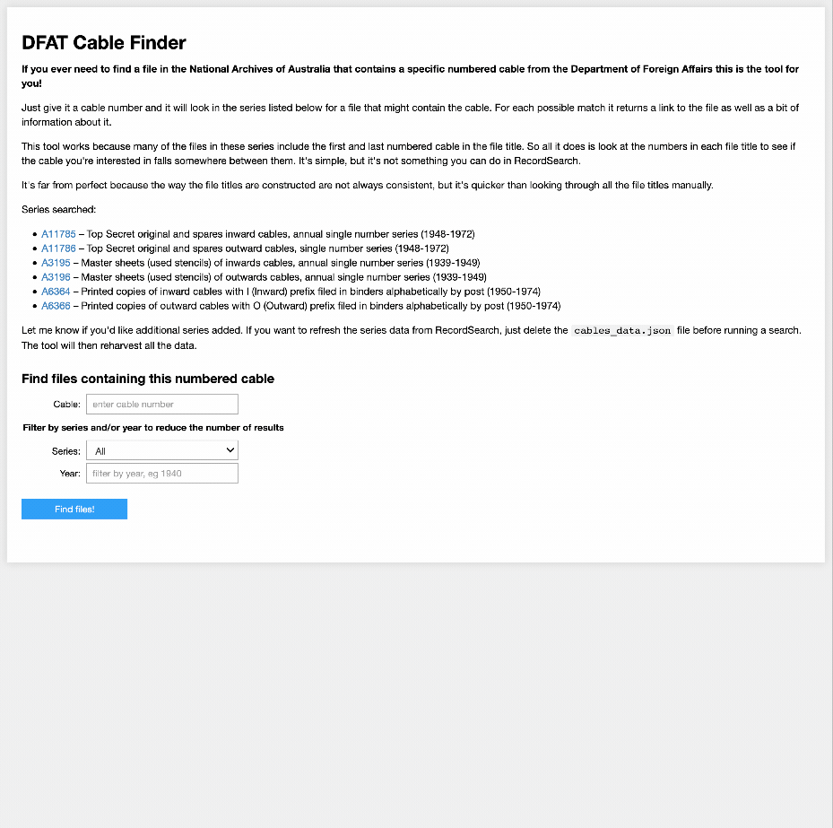

RecordSearch¶
RecordSearch is the online collection database of the National Archives of Australia. Based on the series system, RecordSearch provides rich, contextual information about series, items, agencies, and functions.
Unfortunately RecordSearch doesn't provide access to machine-readable data through an API, so we have to resort to screen scraping. The notebooks here all make use of the RecordSearch Tools library to handle the scraping.

Tools, tips, and examples¶
Harvesting a series¶
Harvest details of all items in a series and download images from any digitised files. Series with more than 20,000 items can be a bit tricky, but some strategies for dealing with these are included as well.
Harvest files with the access status of 'closed'¶
The National Archives of Australia's RecordSearch database includes some information about files that we're not allowed to see. These files have been through the access examination process and ended up with an access status of 'closed'. While you can search by access status in RecordSearch, you can't explore the reasons, so if you want to dig any deeper you need to harvest the data. This notebook shows you how.
Harvesting functions from the RecordSearch interface¶
This notebook attempts to extract information from the RecordSearch interface about the hierarchy of functions it uses to describe the work of government agencies. Previous explorations have shown that the NAA's use of functions is rather inconsistent. All I'm doing here is finding out what functions RecordSearch itself says it is using. This may not be complete, but it seems like a useful starting point.
How many of the functions are actually used?¶
In this notebook we'll import data about functions that we've harvested earlier and search for each of these functions in RecordSearch to see how many are actually used.
Harvest agencies associated with all functions¶
This notebook loops through the list of functions that were extracted from the RecordSearch interface and saves basic details of the agencies responsible for each function. To keep down the file size and avoid too much duplication it doesn't include the full range of relationships that an agency might have. If you want the full agency data, use the app below to harvest agencies associated with an individual function or hierarchy.
Useful apps¶
These are Jupyter notebooks designed to run in 'app mode' with the code cells hidden. The Binder buttons will automatically open the notebooks in app mode, but you can always view and edit the code by clicking the 'Edit App' button.
Download the contents of a digitised file¶
RecordSearch lets you download a PDF of a digitised file, but sometimes it's more convenient to work with individual images. Just give this app the barcode of a digitised file and it will grab all the images as JPGs, zip them up into a folder, and generate a download link.

Get a list of agencies associated with a function¶
RecordSearch describes the business of government in terms of 'functions'. A function is an area of responsibility assigned to a particular government agency. Over time, functions change and move between agencies. If you're wanting to track particular areas of government activity, such as 'migration' or 'meteorology', it can be useful to start with functions, then follow the trail through agencies, series created by those agencies, and finally items contained within those series. This app makes it easy for you to download a list agencies associated with a particular function.
Who's responsible¶
The National Archives of Australia's RecordSearch database divides government activities up into a series of functions. Over time, different agencies have been made responsible for these functions, and it can be interesting to track how these responsibilities have shifted. This notebook uses data about functions harvested from RecordSearch to create a a simple visualisation of the agencies responsible for a selected function.

DFAT Cable Finder¶
If you ever need to find a file in the National Archives of Australia that contains a specific numbered cable from the Department of Foreign Affairs this is the tool for you! Just give it a cable number and it will look in the series listed below for a file that might contain the cable. For each possible match it returns a link to the file as well as a bit of information about it.
